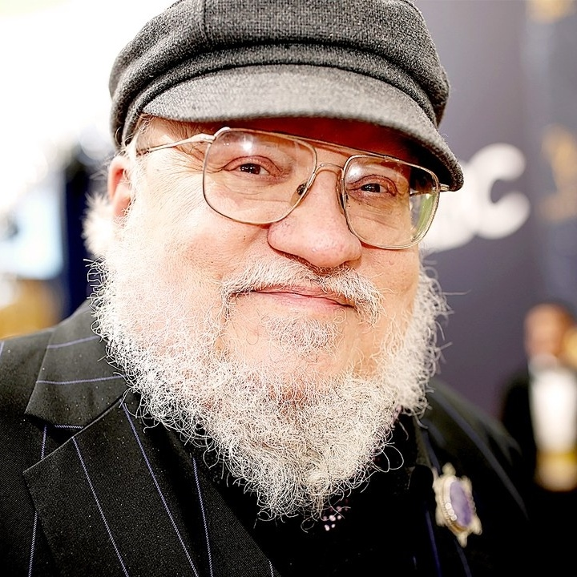
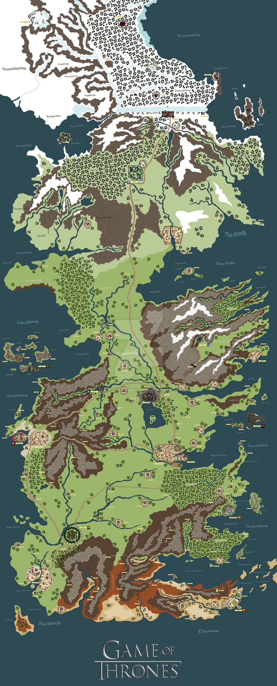
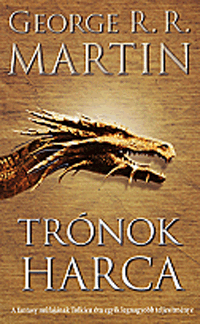
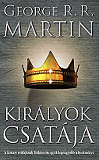
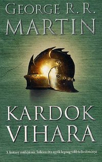
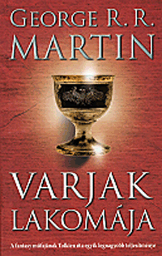
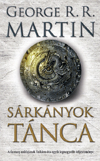
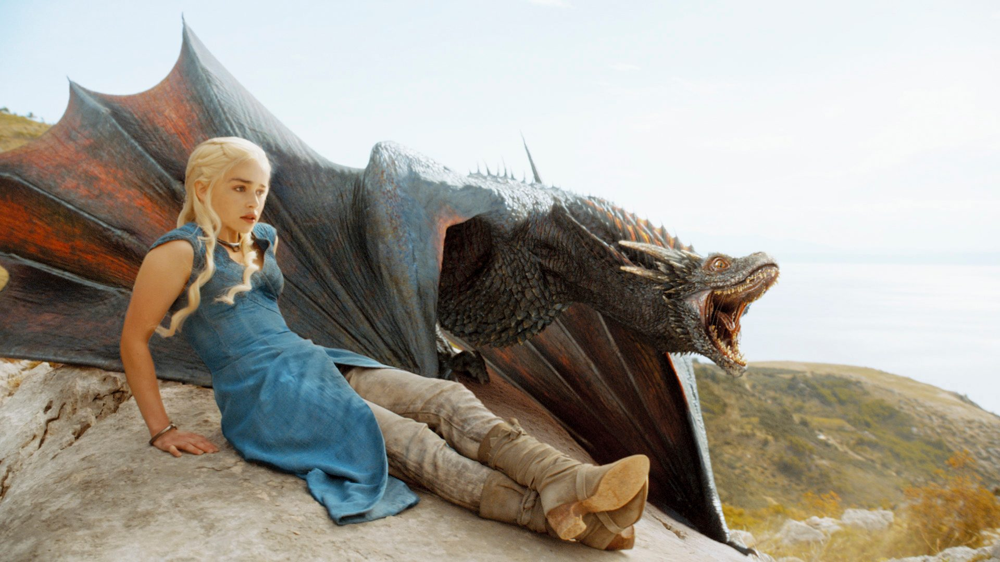

A fatntasy műfaj újjabb ékkőve a Trónok harca. George R. R. Martinkönyveiből készült sorozat, hatalmas sikert aratott. Aki szereti a középkor témáját, a ármánykodás és a sárkányok korát annak ez egy kihagyhatatlan tétel a listáról. Westeros világában részesei lehetünk, ahogy a nemes házak vérremenő küzdelmet vívnak a hatom ért, bevetve észt, furfangot, fegyvert és tüzet. Eközbe valami rettentő közlít északról.

George R. R. Martin
Pár szó az íróról
George Raymond Richard Martin 1948 szeptember 20.-ban született New Jerseyben. Már fiatalon elkezdett írni. Eleinte rémtörténetekkel, majd novellákkal foglalkozott. Egyetemi képzése alatt mesterdiplomát szerzett újságírásból. Tanulmányait követően a Clarke Főiskolában tanított újságírást és csak részmunkaidőben foglalkozott írással. 1979-től lett főállású író. Elsősorban fantasztikus műfajban munkálkodott, de horror és science fiction témában is alkotott. 1986-tól a filmiparban is tevékenykedett producerként. Miután elegelett a stúdiókból visszatért a regényíráshoz. Leghíresebb műve 1996-ban jelent meg. A tűz és jég dala sorozat a fantasy kiemelkedő darabja.
Ha még nem hallottál a Trónok harcáról
Westeros fölött valaha a sárkánykirályok uralkodtak, ám a Tragaryen-dinasztiát tizenöt évvel ezelőtt elűzték, és most Robert Baratheon van hatalmon hű barátai, Jon Arryn, majd Eddard Stark segítségével. A konfliktus középpontjában Deres urai, a Starkok állnak. Olyanok, mint a föld, ahol születtek: makacs, kemény jellemű család. Hősök, gazemberek és egy gonosz hatalom története elvenedik meg. Ám hamar rá kell ébrednünk, hogy ebben a világban mégsem egyszerűen jók és gonoszok kerülnek szembe egymással, hanem mesterien ábrázolt jellemek bontakozak ki különböző vágakkal, célokkal, félelmekkel és sebekkel.

Westeros földje
Westeros a Trónok harca világában a három kontinens egyike, amellyen zajlik a cselekmények túlnyomó része.Az emberek érkezése előtt két faj élt Westeroson, az Erdő gyermekei és az óriások. A történetünk előtt körülbelül tízezer évvel érkeztek az Elsők a földrészre. Ezt követően jött a Hősök kora, mely alatt számos királyság megalakult.
Sajnos ezt a boldog ídőt egy sokkal sötétebb követte, a Hosszú Éjszaka. Westeroson ugyanis máshogy telnek az évszakok. Amíg a tavas és az ősz majd egy-két év távlatúak, a tél és a nyár több emberöltőig is eltarthat. A Hosszú Éjszaka a westerosi emberek legsötétebb időszaka volt. Az Örök Tél Földjéről ugyanis elindult a Másoknak nevezett rettenet. Ez a csak hideget és halált hozó emberhez hasonló faj megtámadta a déli királyságokat. A velük érkező tél több mint száz évig tartott. Az embereknek csak az Erdő gyermekeivel kötött szövetséggel sikerült visszaverni a rideg lényeket. Ezt követően a Stark-ház alapítója, Építő Brandon, észak déli területek északi régiójának királya egy védvonalat állitott fel, hogy a Mások nehogy mégegyszer ekkora bajt hozhassanak az emberekre. Ez pedig a még mindíg álló hatalmas építmény, a Fal, amit egy független lovagrend, az Éjjeli Őrség oltalmaz.
A Mások után béke honolt Westeros királyságain, ám rövid idő elteltével új hódítók érkeztek. A sáránykirályok. A Targaryen-ház öveteléseit eleinten nem vették komolyan, mert sem területük, sem hadseregük nem volt jelentős. Mégis a Targaryenek támadásainak senki sem tudott ellenálni, mivel volt egy előnyük ezezk pedig a sárkányok voltak. Ezekkel a lényekkel seki nem versenghetett. Miután Arryn Völgye és Észak uralkodói megadták magukat, az új hódítók uralmuk alá hajtották a kontinenst. Egy új kor kezdődött, új dinasztiával, ami a Hét királyságnak nevezett egyesített államok fölött uralkodik. Uralkodásuk alatt két polgárháború is volt, amik között az utolsó sárkányok is eltüntek. A második polgárháború vetett véget a rémuralomnak. És itt kezdődik történetünk, a Baratheon-ház trónra kerülésével...
A táblázatban a könyvek alap adatait tüntetjük fel (cím és borítókép). A felsorolás a történet sorrendjét követi.
Cím
Borító
Trónok harca

Királyok csatálya

Kardok vihara

Varjak lakomája

Sárkányok tánca

The Winds of Winter
(előkészületben)
A Dream of Spring
(tervezett)

Sorozat Vs Könyvek
Ez a lenyűgöző alkotás remek alapanyaga lett a fantasy műfaj egyik mérföldkövét jelető sorozatnak. Bizonyára már hallottad vagy láttad is a Tűz és jég dalából készült HBO-s filmsorozatot, a Trónok harcát. Sajnálatos módon a könyvek ádozatául estek a filmsorozat sikerességének. A első két évad cselekménye szorosan követi az első két kötet cselekményeit, azonbam a folytatásban mind tempóban, mind történetben eltér az eredetitől. Na ez még nem lenne fájó pont, de sorozat népszerűsége miatt, George R. R. Martin elsősorban arra koncentrált. Így még ma sem készült el két könyv, amely kellőképpen lezárná a papír alapú történetet. Mindenesetre érdemes mind a sorozatot mind könyveket megismerni, mert mindkettő remek alkotás.
Tudod követni?
George R. R. Martin Tűz és jég dala című sorozata egy rednkívül alaposan kidolgozott, csodálatos történet, ami sokan szakít az addigi fantatszikus történetek sémáival. Az alkotás sokszor hasonlítják J. R. R. Tolkine-néhoz, ami a mai napig az egyik legjelentősebb iromány a műfajban. A Trónok harca története az elődeivel ellentétben több fő cselekményszálon fut, amik időben, térben máshol játszódnak és mitöbb sok-sok karaktert mozgatnak, más szemszögű narrációval. Ez egy hihetetlen sokoldalú vátozatos történet mesélést valósít meg. Minezek ellenére, van egy hátránya is ennek. Néha a fejezet váltásoknál, nehéz visszaemlékezni, hova is térünk vissza. Ugyanis nem olyan könnyű fejben tartani a rengetek karakter nevét, származását, helyét, motivációját és előtörténetét. Nem kell megijedni, mert a könyvekben mindíg van egy térkép amin megtalálható az össze helyszín. Illetve egy függelék is csatolva van, amiben le van írva minden a könyvben szerplő házakról, törtétentükről, tagjaikról és udvartartásukról. (Minden karakterről a kellő információ).
Fontos még megemlíteni, hogy nem csak a párhuzamos történetmesélés, de az erkölcsi rend felállításában is újjító ez a történet. Tolkien aklotásaival ellentétben, az itt megjelenő mitvációk és erköcski kérdések, korántsem fekete-fehérek. Nincs egyértelmű gonosz és jó, bár bizonyára talál indendki, számrára könnyebben és nehezebben kedvelhető karakter is. Ebben segít, hogy minden egyes főbb cselekményszálat egy karakter narrál. Ennek köszönhetően megérthetjük motivációikat.